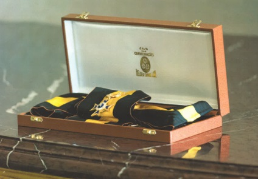
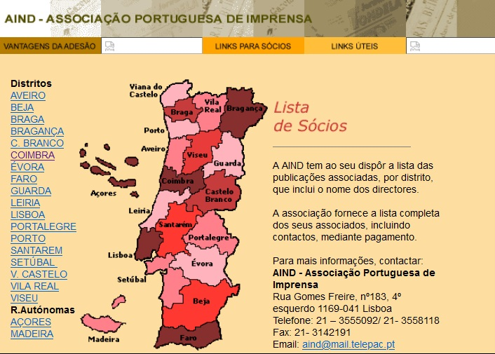

-
2022
Sessão no Museu da Presidência da República e lançamento do ciclo de conferências “Repensar a imprensa 2.2: uma reflexão indispensável”, a 3 de maio.
Inauguração da exposição: "Jornais Centenários do Brasil e Portugal - Um Legado Cultural" no dia 11 de setembro, no Paço dos Henriques, em Alcáçovas.
Dia Nacional da Imprensa em Évora sob o tema “Políticas públicas para a comunicação social”. -
2021
Dia Nacional da Imprensa em Ílhavo (Aveiro), sob o tema “A Transição para o Digital” e criação do Centro de Competência para os Media – AMCC (Aveiro Media Competence Centre).
API lança campanha de literacia associada à Global Media and Information Literacy Week 2021. -
2020
Dia Nacional da Imprensa celebrado online, por causa da pandemia, sob o tema “Luta contra a desinformação”.
Apresentação do Plano de Ação para a democracia europeia – Digital Act, com a presença da comissária europeia Vera Jourová. -
2019
Dia Nacional da Imprensa, em 8 e 9 de Dezembro, na Coimbra Business School.
Exibição do filme “The post”.
Apresentação do Programa Media Veritas. -
2018
Dia Nacional da Imprensa realizado no Palacete Araújo no Porto, sob o tema “A Imprensa – O Passado e o Futuro”. Incluiu um painel sobre “Boas Práticas contra a desinformação e manipulação jornalística”.
Inauguração da Exposição sobre as Publicações Centenárias Portuguesas e os 130 anos do Jornal de Notícias.
Congresso Wan-Ifra. -
2017
Dia Nacional da Imprensa realizado em Lisboa, sob o tema “O papel e o digital: que modelos de negócio” e “‘Fake news’: como manipular a Internet”.
Projeto dos Jornais centenários (Notícia do Observador).  -
2016
Dia Nacional da Imprensa realizado na biblioteca do Museu do Desporto, no Palácio Foz, sob o tema tema “O Leitor Consumidor”. .
-
2015
Dia Nacional da Imprensa realizado no Convento de Cristo, em Tomar, sob o tema "O negócio sustentável da Imprensa na era digital".
Neste encontro teve lugar a assinatura de Novo Acordo do Correio Editorial com os CTT.
-
2014
O Dia Nacional da Imprensa dividiu-se em duas sessões, a primeira no dia 4 de dezembro, a bordo do navio MSC Poesia, no Cais de Santa Apolónia, em Lisboa, e a segunda no dia 14 de novembro, no Palácio Foz, em Lisboa. O temas foram, respetivamente, "Os desafios da Comunicação Social para 2015" e "Apoios à Comunicação Social: Os novos Regimes de Incentivos e o Quadro Comunitários do Apoios 2014-2020".
-
2013
Dia Nacional da Imprensa realizado no Auditório Millennium bcp, na Rua Áurea, em Lisboa, sob o tema “(R)enovar as Políticas Públicas para os Media”.
Neste ano também em destaque: Novo Acordo do Correio Editorial 2013-2015. Novo tarifário para envio de jornais e publicações periódicas. -
2012
Dia Nacional da Imprensa em Palmela, sob o tema “(Re) Financiar a Imprensa na emergência da crise no horizonte da Europa 2020”.
-
2011
Dia Nacional da Imprensa na Sociedade Central de Cervejas e Bebidas em Vialonga, sob o tema “Estratégias de Marketing para enfrentar um mercado mais competitivo”. .

-
2010
Dia Nacional da Imprensa na ex-Escola Prática de Cavalaria de Santarém, no dia 16 de dezembro, sob o tema "A Imprensa em Mudança: gestão para o sucesso".
Neste ano, está em curso o Programa de comemorações dos 50 anos da Associação. . -
2009
VII Edição do Dia Nacional da Imprensa, no auditório do Centro de Informação Urbana de Lisboa, no Picoas Plaza, em Lisboa, sob o temas vários tópicos, tais como Micro-Pagamentos e as redacções do futuro.
Curiosidade relativa a este ano: Plano de contingência para a Gripe-A. . -
2008
O Dia Nacional da Imprensa foi realizado no Palácio da Independência, em Lisboa, sob o tema: "A Europa e a Auto-Regulação da Imprensa".
-
2007
-
2005
O XI Congresso da Imprensa Portuguesa foi realizado em Macau na Fundação Jorge Álvares, entre 5 e 15 de dezembro, subordinado ao tema “Media e os desafios da Sociedade de Informação”. Neste ano a API tem um novo site com um visual renovado.
-
2004
O Congresso da AIND - Associação Portuguesa de Imprensa realizou-se entre os dias 2 e 9 de Maio de 2004, em Porto Seguro, Recife, Brasil. Neste Congresso foi decidida a mudança de nome para Associação Portuguesa de Imprensa.
-
2003
Encontro Nacional da AIND-API realizado em Leiria, a 28 de maio, sob o tema “O Papel dos Media na Sociedade de Informação” com o apoio do jornal “A Região de Leiria”. D.

-
2001
O primeiro site da AIND, na versão mais antiga encontrada no arquivo Arquivo.pt, é uma versão fragmentada, como costuma acontecer com websites antigos, mas dá-nos a visão exata da informação publicada em 2001. A lista de sócios à data de 2001, por exemplo, é um registo interessante para quem quer conhecer a história da Associação.
IX Congresso da Imprensa Portuguesa em Newark, Estados Unidos, de 26 a 28 de abril, com o mote “A Empresa Jornalística Portuguesa no Contexto da Nova Economia”. (Slides do evento)  -
2000
Congresso da Imprensa Portuguesa no Recife, Brasil.
Nova designação “Associação Portuguesa de Imprensa” ao que parece de forma ainda não oficial, em abril de 2000. . -
1998
VII Congresso no Funchal sob o tema “A Imprensa primeiro”. .

-
1996
VI Congresso em Macau sob o tema “A Imprensa Lusófona no Mundo”.

-
1993
V Congresso da AIND sob o tema “A Imprensa e o Ambiente".

-
1991
IV Congresso da AIND sob o tema “A Informação no Século XXI”.

-
1989
III Congresso da AIND sob o tema “Expandir e Modernizar”.

-
1987
II Congresso da AIND sob o tema “Aposta no Futuro”.

-
1985
I Congresso da AIND, de 3 a 5 de Maio de 1985 nas Caldas da Rainha, sob o tema “Renovação e Progresso”.

-
1975
No dia 8 de janeiro a AIND passou para as suas novas instalações na Rua Gomes Freire, nº183.

-
1970
O Grémio Nacioanal de Imprensa Regional adotou o nome Grémio da Imprensa Não Diária (AIND) em 31 de janeiro de 1970.

-
1969
Realizado em Lisboa, no Palácio Foz, de 11 a 13 de dezembro (o último antes do 25 de Abril).

-
1967
-
1966
Encontro da Imprensa Regional a Sul do Tejo

-
1964
O II Encontro da Imprensa Não Diária foi realizado no Porto de 20 a 22 de fevereiro. Tratou de temas como a valorização dos órgãos da imprensa regional, publicidade, concorrência de publicações não autorizadas, CTT e questões relativas ao fisco.
Encontro de Suplementos e Páginas Culturais da Imprensa Regional. O Grémio criou encontros regionais, sendo este o primeiro. “Encontro de Suplementos e Páginas Culturais da Imprensa Regional”. -
1961